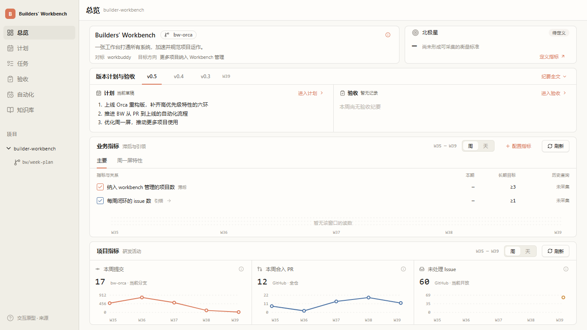
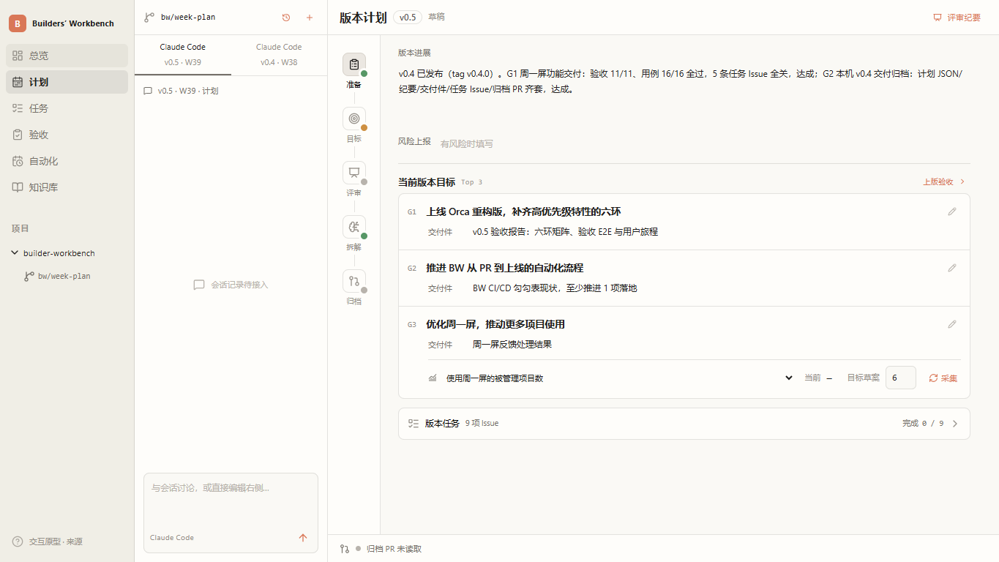
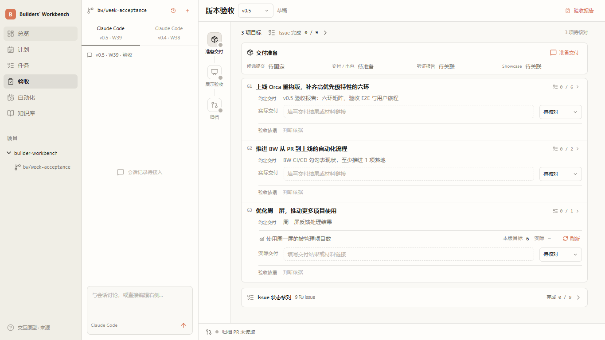

<!doctype html><html lang="zh-CN"><meta charset="utf-8"><meta name="viewport" content="width=device-width,initial-scale=1"><title>BW 高保真评审 · v8</title><style>body{margin:0;background:#f7f6f2;color:#26251f;font:16px/1.8 system-ui,sans-serif}main{max-width:1000px;margin:60px auto;padding:24px}h1{font-size:32px;margin:0 0 10px}p{color:#68645d}nav{display:grid;grid-template-columns:repeat(3,1fr);gap:18px;margin:30px 0}a{color:inherit}nav a{background:white;border:1px solid #dedbd2;border-radius:12px;overflow:hidden;text-decoration:none}img{width:100%;display:block}nav strong,nav small{display:block;margin:10px 16px}nav small{color:#777;font-size:13px;margin-bottom:18px}.docs{display:inline-block;padding:12px 24px;background:#b95d40;color:white;text-decoration:none;border-radius:8px}aside{margin-top:28px;font-size:14px;color:#777}@media(max-width:650px){nav{grid-template-columns:1fr}}</style><main><h1>版本运作 · 高保真评审</h1><p>版本计划、版本验收、总览指标 · 第八版 · 2026-09-24</p><nav><a href="prototype.html#overview"><strong>总览指标</strong><small>真实来源、特性指标、多周记录</small></a><a href="prototype.html#monday"><strong>版本计划</strong><small>制定目标、Leader 评审、连接任务</small></a><a href="prototype.html#friday"><strong>版本验收</strong><small>准备交付、展示验收、归档</small></a></nav><a class="docs" href="https://github.com/forcegravity1989/builder-workbench/tree/codex/f2-week-planning/docs/05-features">查看三个特性文档（评审分支）</a><aside>解压整个目录后直接打开。原型编辑仅在内存，不会操作真实项目。<br>核心页面可离线使用；外部原始证据链接需要网络。建议按“页面/步骤 → 问题 → 期望行为 → 优先级”反馈。</aside></main></html>